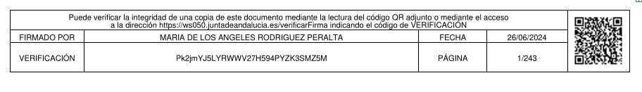
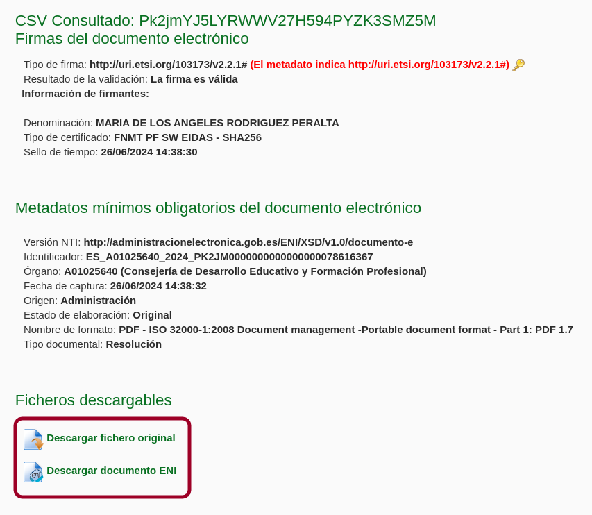

9.1.3.2. Firma de documentos¶
Para firmar documentos existen dos vías basadas en certificados digitales X.509:
Si el documento tiene formato PDF, este estándar permite integrar en un objeto interno la firma dentro del propio documento.
Nota
Aunque opcionalmente pueden generarse marcas visibles en el documento que denoten quién ha firmado y cuándo lo ha hecho, la firma digital en sí no deja huella visible en una impresión: se verifica utilizando una herramienta de verificación sobre el archivo.
Al estar integrada la firma dentro del propio documento, el algoritmo debe:
calcular el resumen de todo el documento, exceptuando el contenido de la propia firma[1].
permitir adjuntar sucesivamente distintas firmas. Tenga presente, no obstante, que una de las firmas, no incluiría en su resumen los añadidos que suponen las que se hayan hecho después. Consecuentemente, el orden en que se firme es importante si los firmantes tienen distinta jerarquía: lo lógico, pues, es que firme primero el que tenga menos jerarquía, después el supervisor del primer firmante y así sucesivamente.
Ver también
Para conocer con mayor profundidad cómo se almacenan las firmas dentro de un PDF puede leer el extenso libro blanco sobre firmas digitales de Bruno Lowagie.
Sea cual sea el documento (o flujo de datos), puede generarse un archivo independiente de firma que contiene el resumen cifrado junto a metainformación sobre el proceso. Es lo que se llama firma independiente. De modo muy rudimentario, esto fue lo que se hizo anteriormente al presentar el concepto de firma. Este método es el que se usa en la firma de correos electrónicos, pero también puede usarse para firmar documentos.
9.1.3.2.1. Estatus legal¶
La validez legal de la firma digital está desarrollada en España a través de la Ley 6/2020, de 11 de noviembre, reguladora de determinados aspectos de los servicios electrónicos de confianza, y el Reglamento eIDAS (Reglamento 910/2014, conocidos por sus siglas en ingles eIDAS). La normativa establece dos tipos de prestadores de servicios de confianza (esto es, de CA):
Prestadores cualificados, que son aquellos reconocidos como tales por un organismo supervisor[2]. Las obligaciones a los que están sujetos se encuentran enumeradas en el artículo 9 de la Ley 6/2020.
Prestadores no cualificados, que son aquellos que no gozan de este reconocimiento, aunque se encuentran inscritos para el ejercicio de su actividad.
Esta distinción origina que haya certificados digitales cualificados y certificados digitales no cualificados y, consecuentemente, una firma electrónica cualificada y una firma electrónica no cualificada. La diferencia legal entre una y otra firma es que la primera tiene los mismos efectos juridicos que la firma manuscrita, mientras que la segunda no, aunque puede ser admitida en un juicio[3].
El Ministerio publica en su web la lista de prestadores cualificados y no cualificados de confianza. Como todos los países de la Unión tiene la obligación de remitir estas listas, es posible la consulta de todos los prestadores europeos.
9.1.3.2.2. Firma integrada¶
Hay varias aplicaciones en Linux que permiten la firma y verificación de firmas de documentos PDF:
LibreOffice (dentro del menú «Archivo»).
Poppler y todas las aplicaciones que lo tomen como base (Zathura, Evince)[5].
Las proporcionadas por el Gobierno de España:
Autofirma, escrita en Java, para la firma.
La página Valide, para validación de documentos firmados con certificados expedidos por algunas CA reconocidas por el Ministerio de Industria, Comercio y Turismo. Esta página también ofrece la opción de firmar, pero lo hace, en realidad, recurriendo a un Autofirma que haya instalado en el sistema.
Nos centraremos en este apéndice práctico en el uso por línea de órdenes de pdfsign, una orden incluida dentro del paquete poppler-utils:
# apt install poppler-utils
Nota
El uso de las citadas utilidades del Gobierno no entraña mucha dificultad:
Autofirma se distribuye como un archivo .zip que, entre otros, contiene un paquete deb. La instalación de este paquete asegura que se satisfagan las dependencias y se asocie a la aplicación el tipo MIME
x-scheme-handler/afirmaque permite soportar el protocoloafirma://que usan las páginas oficiales cuando requieren firmar un documento.La FNMT, que emite gratuitamente certificados personales, usa otra aplicación más, Configurador FNMT-RCM, exclusivamente para el proceso de generación de certificados. Esta es la aplicación que se encarga de generar las claves, solicitar el certificado y, finalmente, recibirlo. También para ella hay un paquete deb que se encargará de satisfacer las dependencias y asociar el tipo MIME
x-scheme-handler/fnmtcrque permite soportar el protocolofnmtcr://.
Advertencia
En realidad, ambas aplicaciones son aplicaciones escritas en Java, pero no incluyen entre sus dependencias el intérprete, por lo que, si no lo tuviéramos ya instalado, no se instalará y las aplicaciones no funcionarán. Cerciórese, por tanto, de que lo tiene:
# command -v java || apt install default-jre
Una vez que complete la instalación de ambas aplicaciones, cerciórese de que el sistema es capaz de soportar los dos protocolos referidos:
$ xdg-mime query default x-scheme-handler/fnmtcr
configuradorfnmt.desktop
$ xdg-mime query default x-scheme-handler/afirma
afirma.desktop
Para más información, consulte «Aplicaciones predeterminadas».
9.1.3.2.2.1. Validación¶
La validez de la firma de un PDF se puede hacer del siguiente modo:
$ pdfsig -nocert documento.pdf
La orden de arriba, sin embargo, no comprobará la fiabilidad del certificado firmante (-nocert). Para hacerlo, es necesario que el programa utilice un catálogo de claves que disponga de toda la cadena de confianza. Este catálogo es un almacen NSS como los que usa Firefox o Chromium. Supuesto que dispongamos de ese catálogo, entonces podremos comprobar la firma y cerciorarnos de la fiabilidad del certificado:
$ pdfsig -nssdir ~/.pki/nssdb documento.pdf
Ver también
Consulte cómo crear, consultar y mantener un catálogo NSS. En la orden de ejemplo se ha supuesto que se usa el catálogo creado por Chromium.
9.1.3.2.2.2. Firma¶
Advertencia
Para poder firmar documentos es necesario utilizar al menos la versión 21.01 de poppler-utils, y preferentemente al menos la 21.10 (o sea, al menos, Bookworm) que permite añadir un nuevo campo de firma.
Supuesto que dispongamos de un almacén NSS con nuestro certificado y su cadena de confianza:
$ pdfsig -nssdir ~/.pki/nssdb -add-signature -nick 'CADENA-EN-NSSDB-DEL-CERT' doc.pdf doc_firmado.pdf
9.1.3.2.3. Firma independiente¶
La otra estrategia para la firma digital es generar archivos independientes de firma. En este caso, el estándar más habitual es el referido en el RFC 2315 y que ya hemos citado al tratar el formato PKCS #7.
Aunque un usuario puede firmar y verificar de forma manual (acciones que veremos después), lo habitual es que los organismos que utilizan esta estrategia obren del siguiente modo:
La firma de un documento genera un documento modificado que es igual al original, pero que además contiene de forma visible un código de verificación y una URL donde se puede llevar a cabo la verificación de la firma.
Nota
Al respecto de este documento modificación conviene hacer dos precisiones:
Al estar modificado, no puede verificarse con el archivo de firma, ya que este verifica el original, esto es, el documento sin ese añadido que contiene la información de verificación.
Cuando son varios los firmantes, el firmante n-ésimo firma el archivo modificado generado por el firmante anterior, no el archivo original. Por tanto, cada firma genera un archivo modificado y un archivo de firma que deben almacenarse todos, si luego quiere hacerse la comprobación de todas las firmas. Además, los códigos de verificación se van añadiendo en las sucesivas modificaciones, por lo que el último archivo modificado resultado de haberse firmado todos los documentos contiene los códigos de verificación de todas las firmas.
El archivo original y el de firma se almacenan en un servidor al que se accede a través del servicio de verificación,
De esto modo, el usuario que desea comprobar la veracidad del documento debe ingresar en el servicio de verificación y usar el código de verificación. El servicio le proporcionará el archivo original y el de firma y, adicionalmente, podrá llevar a cabo la comprobación de la firma. comprobación que, en cualquier caso, podrá hacer el propio usuario con los dos archivos que se le proporcionan.
Ver también
La Junta de Andalucía utiliza este mecanismo de firma electrónica para sus documentos. Más adelante lo trataremos y se ilustrará cómo en particular se hace todo lo indicado más arriba.
Esta segunda estrategia que utilizan los organismos tiene sus ventajas e inconvenientes frente a la de firma integrada:
- Ventajas
En principio, con esta estrategia se puede firmar cualquier tipo de documento, ya que el formato no tiene que haber considerado un modo de incrustar en sus metadatos la firma. En la práctica, si se hace a través de uno de estos servicios y no de forma manual, es probable que sólo se puedan firmar archivos PDF, ya que el servicio debe manipular el archivo original para incluir la información de verificación y, posiblemente, sólo se haya preparado para alterar documentos PDF.
Si se imprime el documento en papel, aún sabremos que se firmó y cómo verificarlo, ya que podremos ver en la copia de papel el código de verificación y la URL a la que acceder.
- Desventajas
El propio documento no contiene la información de firma, sino que ésta se halla almacenada externamente.
Cuando se utiliza un servicio, este almacenamiento externo es un servidor ajeno, por lo que dependeremos de que el organismo conserve tal información, ya que de lo contrario será imposible llevar a cabo la verificación. En principio, podríamos soslayar este problema descargando el archivo original y el de firma en cuanto hubiéramos firmado, en vez de confiar en que tales archivos se conserven siempre en el servidor remoto.
La verificación se hace con el archivo original, no con el modificado. Alguien malintencionado podría haber hecho cambios adicionales en el contenido del modificado tras la firma, por lo que posteriormente no basta con verificarla, sino que también tendremos que cotejar visualmente que la única diferencia entre el original y el modificado es la información adicional de verificación.
9.1.3.2.3.1. Firma¶
Partamos de que tenemos un documento (no necesariamente un PDF) y un
certificado personal (key.pem y cert.pem) con el que queremos
firmar tal documento:
$ openssl smime -sign -in fichero.txt -inkey key.pem -outform DER -binary -signer cert.pem -out fichero.p7s
Esto generará un archivo de firma (fichero.p7s en formato DER) que
contiene la firma en sí y también el propio certificado (lo que simplifica luego
la verificación). A partir de ahora tendríamos que almacenar tanto el archivo
(fichero.txt) como la propia firma (fichero.p7s).
Advertencia
Al archivo de firma, además de la propia firma, sólo se añade el
certificado del firmante[6], aunque puedan existir otros certificados dentro de
cert.pem que completen la cadena de confianza. Si se desea añadir
éstos también, deberán ponerse en archivo aparte y declararlo con la opción
-certfile:
$ openssl smime -sign -in fichero.txt -inkey key.pem -outform DER -binary -signer cert.pem -certfile chain.pem -out fichero.p7s
9.1.3.2.3.2. Verificación¶
La verificación consiste en tomar el archivo de firma (fichero.p7s), que
suponemos que contiene el certificado firmante, y el archivo que se firmó
(fichero.txt):
$ openssl smime -verify -inform DER -in fichero.p7s -content fichero.txt -purpose any -binary > /dev/null
Verification successful
Advertencia
La verificación exige que la cadena de confianza esté completa. Si
fichero.p7s no contiene el certificado del firmante, habrá que
referirlo a través de -certfile y, si existen autoridades intermedias,
deberemos incluir sus certificados mediante -CAfile.
9.1.3.2.3.3. Cómo firma la Junta de Andalucía¶
En realidad, este procedimiento es común a las administraciones públicas (al menos las españolas). Por ejemplo, la Comunidad de Madrid también lo practica.
Tomemos un documento firmado por la administración. Por ejemplo, tomemos las Instrucciones para regular aspectos relativos a la organización y el funcionamiento [de a Formación Profesional] para el curso 2024/2025. De un simple vistazo, sabemos que están firmadas porque todas las páginas tienen este pie:
que es precisamente el contenido que se añade al original como consecuencia del proceso de firma. Trae información de quién lo firmó y cuándo, pero lo realmente sustancioso es que incluye una URL y un código de verificación (o un código QR con esa misma información). Al acceder a esa URL, podremos escribir el código de verificación y obtendremos lo siguiente:
Se nos indica que la firma es válida (lo cual podemos creer o no), quién y cuándo
firmó (aunque eso eran datos que ya proporcionaba el pie añadido); y sobre todo
el archivo original (que si lo descargamos podremos comprobar que es idéntico,
pero no contiene el pie informativo) y un documento XML del que podemos
extraer el archivo de firma .p7s, ya que se encuentra contenido en uno de
sus elementos:
$ cat <<EOF > firma.p7s
-----BEGIN PKCS7-----
$(xmlstarlet sel -B -t -v '//enids:FirmaConCertificado' documentoENI.xml)
-----END PKCS7-----
EOF
Con ambos archivos podemos hacer la comprobación:
$ openssl smime -verify -inform PEM -in firma.p7s -content original.pdf -purpose any -binary > /dev/null
Verification successful
Nota
En las órdenes documwentoENI.xml es el XML descargado y
original.pdf el PDF original también descargado.
Notas al pie